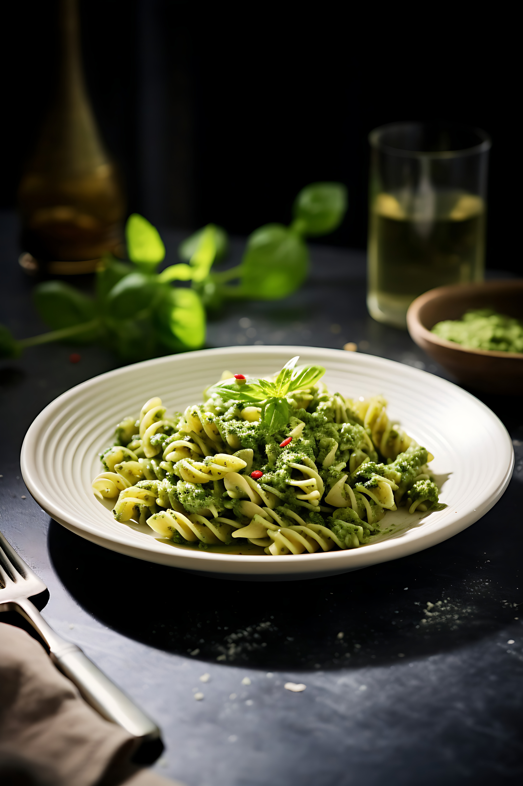

Pasta Al Pene

Descrição do prato
A Pasta Al Pene é um prato de massa estilo penne, preparado com molho de tomate rústico, manjericão fresco, alho levemente dourado e um toque de azeite extra-virgem. Finalizada com queijo parmesão ralado e pimenta do reino moída na hora, tem textura cremosa e sabor equilibrado — ótima opção para almoços e jantares descontraídos.
Informacoes Nutricionais (por porcao)
| Nutriente | Quantidade | % VD* |
|---|---|---|
| Calorias | 680 kcal | 34% |
| Proteína | 18 g | 36% |
| Carboidratos | 85 g | 28% |
| Gordura Total | 22 g | 34% |
| Fibra Alimentar | 6 g | 24% |
| Colesterol | 55 mg | 18% |
| Sódio | 620 mg | 26% |
| Açúcar | 6 g | 12% |
*VD = Valor Diário | Baseado em uma dieta de 2.000 calorias diárias | Valores aproximados